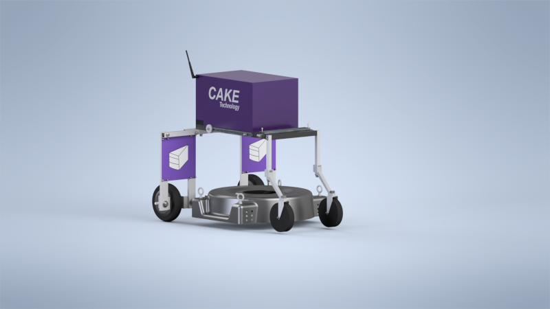

A Quick Summary of the Idea behind Norm:
The New Normal in Landscaping
My pursuit of Artificial Intelligence eventually led into my passion for Robotics.
At the end of 2018 I started forming an idea for a robot that I wanted to build. After consulting with some of my favorite professors, I began my pursuit of building my very own robot.
One day in my final year, as I was forced to listen to a large University Lawn Mower outside of my little appartment, I asked myself: why is it was so loud? why is ran on gasoline? and why did a human have to drive it?
These questions popped into my mind every time I heard the mower, and eventually I decided that I wanted to make a mower that was not plauged by any of these issues. After consulting with my favorite professors, I began my pursuit of
building my own Autonomous Landscaping Robot. Norm's design draws from my experience as a farm hand and landscaper during my High School years, using these experiences I began researching into the current designs of machines in the landscaping and farming industry.
In the year since I've began, Norm is still in its Beta but has come a long way. Here is of List of all of the pieces used in making Norm Work:
- Build Materials
- High Quality Aluminium Frame
- HDPE Main Body Panel
- 3D Printed Parts: Carbon Fiber, Nylon 6/6, and ABS
- Technologies
- Radio Communicatoin
- Bluetooth Communication
- Distance Sensors: Sonar and Infared
- Brushless Gearless Electric DC Motors
- Satellite Imaging
- Deep Learning
- 10-DOF Inertial Measurement Unit
- GPS and GNSS Location Technology
- Spectrometer and Light Sensors
- an 8-bit Microcontroller
my design philophy for Norm was to keep it simple. I want him to be easy to repair and cheap to produce right here in the United States. Norm is currently only using an 8-bit processor, this was decided as both a challenge and cost saving measure. I know that if it can work on a simple processor, that upgrading will give great performance benefits for his final version.
Pictures of Norm
